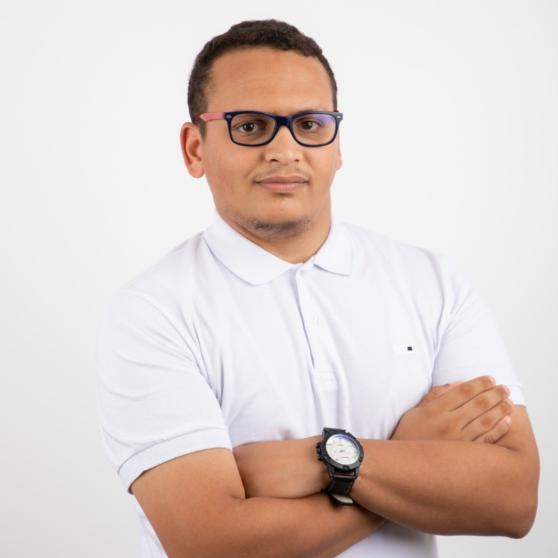

Elyes Manai

Machine Learning Educator & Consultant
Google Developer Expert in Machine Learning
Downloadables
Resume / CVStatement of Purpose
Contact
Personal: manai.elye2s@gmail.com Professional: manai.elyes@esen.tn| Home | Career | Research | Talks | Content | Awards | Teaching |
Invited Talks
- (Machine & Deep) Learning , Online, 2 November 2020, Training session
- Launch your career in AI (LRAI) , Online, 18 October 2020, LRAI
- All about Entrepreneurship , Online, 17 October 2020, Independant Talk
- Launch your career in AI (LRAI) , Online, 17 October 2020, LRAI
- Launch your career in AI (LRAI) , Online, 16 October 2020, LRAI
- Launch your career in AI (LRAI) , Online, 15 October 2020, LRAI
- Launch your career in AI (LRAI) , Online, 14 October 2020, LRAI
- Launch your career in AI (LRAI) , Online, 13 October 2020, LRAI
- Time Optimization , Lac 1, Tunis, 10 October 2020, 3ich 7ilmik
- Launch your career in AI (LRAI) , Online, 7 October 2020, LRAI
- Boost your career , CUN, Ariana, 3 October 2020, Summer School 3.0
- Boost your career via social activities , Online, 30 September 2020, Level Up
- Artificial Intelligence in a nutshell , Online, 26 September 2020, Let's talk , more info
- NLP: From Zero to Hero , Online, 31 August 2020, Formation NLP, more info
- Boosting your Business with Data and AI , Online, 16 May 2020, Business Talk #5, more info
- Launch your career in AI (LRAI) , Online, 25 April 2020, Machine Learning Buffet, more info
- AI in Business , Online, 25 April 2020, Independant Talk, more info
- Launch your career in AI (LRAI) , Online, 20 April 2020, Independant Talk, more info
- Al for non-coders , Lac 1, Tunis, 27 February 2020, 6to8 talks, more info
- Launch your career in AI (LRAI) , Sfax, 23 February 2020, LRAI, more info
- Launch your career in AI (LRAI) , Monastir, 22 February 2020, LRAI, more info
- Motivational Speech , Hamamet, 6 February 2020, Foire des sciences, more info
- We have way more time than we think , Bizerte, 2 February 2020, Tedx ENIB, more info
- Launch your career in AI (LRAI) , Manar, Tunis, 1 February 2020, LRAI, more info
- AI in Culture , Tunis, Tunis, 30 January 2020, 1st cultural and creative industries fair, more info
- Natural Language Processing , Campus, Manouba, 29 January 2020, 212, more info
- How AI is copying from humans? , Lac 1, Tunis, 28 January 2020, 6to8 talks, more info
- Why & How to integrate Data Science into the National High School Program , Sousse, 28 January 2020, The National Forum on the Review of High School Computer Sciences Programs, more info
- Computer Vision & Embedded Devices , CUN, Ariana, 25 January 2020, Independant workshop, more info
- Launch your career in AI (LRAI) , Ghazela, Ariana, 22 January 2020, Study Jam ML, more info
- scaling your business using Data & AI , Lac 2, Tunis, 20 January 2020, Independant, more info
- AI in Cybersecurity , Sousse, 19 January 2020, NCSC, more info
- Launch your career in AI (LRAI) , Campus, Manouba, 8 January 2020, LRAI, more info
- The real face of Entrepreneurship , Tunis, Tunis, 28 December 2019, Independant Talk, more info
- Computer Vision for Medical Imaging , Monastir, 16 December 2019, STIC , more info
- AI is for everyone! Not just CS people , Hamamet, 16 December 2019, TSYP, more info
- Value of Time, Stress & Networking , Mourouj, 11 December 2019, 99U, more info
- Making sense of your Unstructured Data , Lac 2, Tunis, 8 December 2019, Pie & AI, more info
- NLP (for Litterature & language students) , Hay Khadhra, 4 December 2019, ISLTECK, more info
- AI in Cybersecurity , Tunis, Tunis, 28 November 2019, MPRFC, more info
- Data Co-Lab , Tunis, Tunis, 27 November 2019, Info Session, more info
- Launch your career in AI (LRAI) , Campus, Manouba, 22 November 2019, LRAI, more info
- Founding a startup isn't the only way to achieve your goals , Tunis, Tunis, 20 November 2019, Entrepreneurship 4.0 (GEW ), more info
- AI for Government , Menzah, Tunis, 19 November 2019, Management Public & IA, more info
- The power of Recommendations , Bizerte, 17 November 2019, Youth Speak Forum, more info
- Data Co-Lab , Ghazela, Ariana, 11 November 2019, Info Session, more info
- Why participate in Hult Prize? , Sidi Bou Said, Tunis, 30 October 2019, Hult Prize ENAU 2019 Launch, more info
- Intro to Artificial Intelligence , Lac 2, Tunis, 27 October 2019, GDG DevFest, more info
- Data Co-Lab & ICompass , Manouba, 17 October 2019, Info Session
- Data Co-Lab , Manouba, 17 October 2019, Info Session
- Data Co-Lab , Manouba, 17 October 2019, Info Session
- Become employable in AI , Manouba, Tunis, 31 August 2019, Independant, more info
- Intro to Artificial Intelligence , Tunis, Tunis, 16 July 2019, National AI Government Training, more info
- Life is a game , Tunis, Tunis, 9 June 2019, Rocket Day IV, more info
- Data Vizualisation for Data Science , Manouba, Tunis, 2 May 2019, School Seminar, more info
- Making a great presentation , CUN, Tunis, 1 May 2019, Independant Event, more info
- Becoming a Great Software Engineer , Marsa, Tunis, 20 April 2019, Level Up Talks, more info
- Sharing my Experience , Manouba, 16 April 2019, megatron, more info
- Get recruited in AI , Ghazela, Ariana, 6 April 2019, Enigma, more info
- Business Model Canvas , Manouba, 23 March 2019, Startup Weekend Manouba, more info
- Business Model Canvas , Manouba, 27 February 2019, Seize It ESEN Forum, more info
- Entrepreneurship Ecosystem , Tunis, Tunis, 10 February 2019, spark dauphine, more info
- Entrepreneurship in a nutshell , Tunis, Tunis, 16 November 2018, Independant Event, more info
- Firebase , Sfax, 10 November 2018, Devfest 2018
- Why Participate in Hult Prize , Sidi Bou Said, Tunis, 24 October 2018, Hult Prize ENAU 2018 Launch, more info
- Achieving results through good stress , Tunis, Tunis, 21 October 2018, Tedx Tunis, more info
- CS50 , Lac, Tunis, 23 August 2018, Independant Talk, more info
- Wordpress , Tadhamon, Ariana, 12 November 2017, Independant Session, more info
- Sponsoring , Manouba, 23 March 2017, Netlinks Trainings
- Fundamentals of Mobile Development , Manouba, 23 December 2016, Netlinks Winter Trainings, more info
- My Career & past , Tunis, Tunis, 1 January 2000, Study.tn Community Gathering
- Sharing my Experience , Tunis, Tunis, 1 January 2000, Independant Talk
- Motivational Speech , Charguia, Ariana, 1 January 2000, ENICAR IEEE opening
- University Orientation , Lac, Tunis, 1 January 2000, Independant Event
- Motivational Speech , Denden, Manouba, 1 January 2000, Spark Days
- Motivational Speech , Ghazela, Ariana, 1 January 2000, SESAME IEEE opening
- Web Development , Lac, Tunis, 2018, ------
- Web Development , Ghazela, Ariana, 2017, ------, more info
{kind=link}
{kind=link}